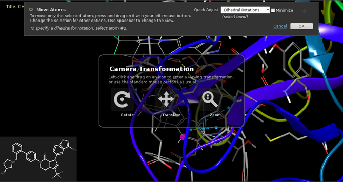

Translation of the Workspace view is performed with the right mouse button, by default.
The axis for translation is selected by a combination of keys and mouse movements. The right mouse button on its own can be used to translate along the y axis with up-down (vertical) movement or the x axis with left-right (horizontal) movement. Holding down the SHIFT key restricts the movement to either the x axis or the y axis, depending on the direction in which you first move the mouse. Holding down the CTRL key selects translation along the z axis.
You can also use keyboard shortcuts (or items on the View → Translate menu) to translate structures by a small increment. The shortcuts are described in the topic Using the Keyboard in Maestro.
If you have a trackpad, you can use a two-finger swipe for the default x and y translation.
To reset the translation so that the origin of the screen axes is set to the coordinate origin of the Workspace structures, choose View → Reset All. This action also resets the rotation so that the screen axes and structure coordinate axes coincide, and resets the zoom to the default.
When you are editing a structure with the Move Atoms tool, you may want to translate the view to bring atoms into view that you want to work on. As the translation action is used to move the coordinates of the selected atoms, you can switch to translating the view by holding down the space bar. This shows the "heads-up display" that gives you options for changing the camera view.

When a project is closed, all viewing transformations (rotation, translation, and zoom) are saved with the project and restored when it is opened again.
The various ways of doing a translation are customizable. The mouse buttons or trackpad gestures used for translation can be customized in the Customize Mouse Actions panel. The increment for translation with keyboard shortcuts can be set in the Preferences panel. The shortcuts for the specific translations are associated with menu items. They can be customized in the Customize Menus panel, which you open with Maestro → Customize → Menus.